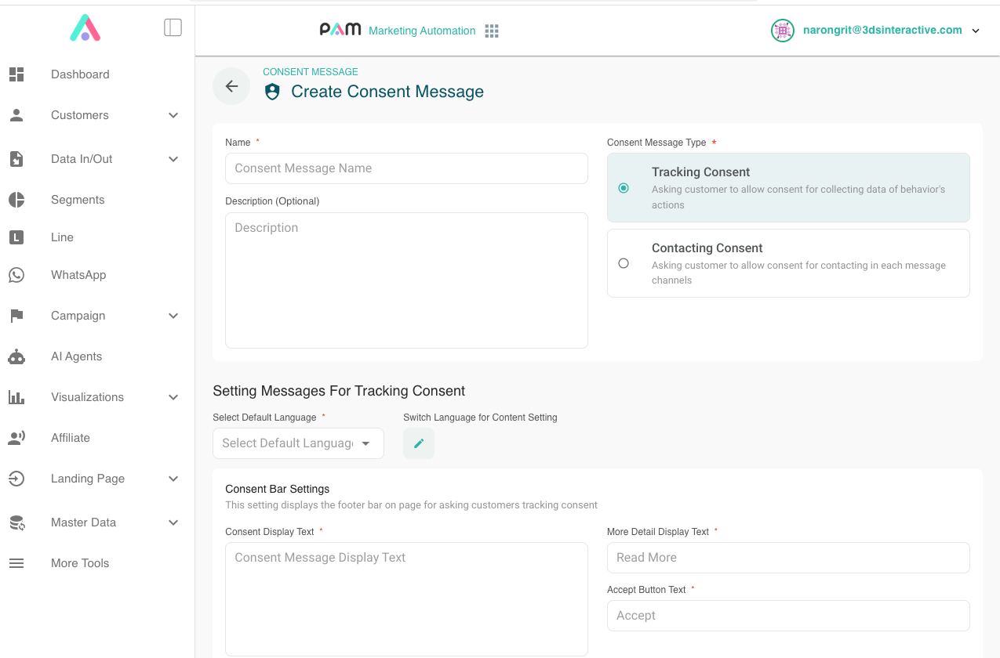

การจัดการความยินยอม (Consent)
ตั้งค่าข้อความขอความยินยอมได้ใน PAM Admin Console ที่เมนู More Tools > Consent Message โดยเลือกประเภทให้ตรงกับวัตถุประสงค์การใช้งาน

ประเภทของ Consent
Tracking Consent
ใช้กำหนดความยินยอมสำหรับการติดตามกิจกรรมของผู้ใช้ และใช้ประกอบการควบคุมการส่ง event tracking โดยนำรหัสข้อความนี้ไปตั้งค่าเป็น trackingConsentMessageID ใน ขั้นตอนที่ 2: เตรียม Config
หากผู้ใช้ยังไม่ได้ยอมรับ Tracking Consent การส่ง event ในขั้นตอนถัดไปจะไม่สามารถบันทึกกิจกรรมของผู้ใช้คนนี้ได้ จึงควรดำเนินการขอความยินยอมก่อนเริ่มส่ง event
หากการติดตามกิจกรรมใช้ฐานความยินยอม แอปต้องขอความยินยอมจากผู้ใช้ก่อนเริ่มดำเนินการตามวัตถุประสงค์นั้น เพื่อให้สอดคล้องกับพระราชบัญญัติคุ้มครองข้อมูลส่วนบุคคล (PDPA) ดู แนวทางการขอความยินยอม
Contacting Consent
ใช้ระบุว่าผู้ใช้อนุญาตให้ติดต่อหรือส่งข้อความผ่านช่องทางใดบ้าง มีผลต่อการส่งแคมเปญในเมนู Campaign โดยแยกจากความยินยอมในการติดตามกิจกรรม
ตรวจสอบสถานะความยินยอม
หลังเริ่มต้น SDK แล้ว เรียก Pam.loadConsentStatus() พร้อมรหัสข้อความขอความยินยอมที่ต้องการตรวจสอบ:
final userConsent = await Pam.loadConsentStatus('CONSENT-MESSAGE-ID');
หาก userConsent.needConsentReview เป็น true แอปต้องแสดงข้อความเพื่อให้ผู้ใช้ทบทวนและตัดสินใจให้ความยินยอม
ขอและบันทึกความยินยอม
แอปเป็นผู้แสดงหน้าจอขอความยินยอม เมื่อผู้ใช้ยอมรับแล้วจึงเรียก Pam.allowConsent() เพื่อส่งผลไปยัง PAM เมธอดนี้ไม่ได้แสดงหน้าจอให้ผู้ใช้ และจะยอมรับทุก permission ในข้อความที่ระบุ จึงเหมาะกับหน้าจอที่ให้ผู้ใช้ยอมรับรายการทั้งหมดอย่างชัดเจน
Future<void> requestUserConsent() async {
// แทนด้วยรหัส Tracking Consent หรือ Contacting Consent ที่ต้องการ
const consentMessageId = 'CONSENT-MESSAGE-ID';
final userConsent = await Pam.loadConsentStatus(consentMessageId);
if (userConsent.needConsentReview) {
// ฟังก์ชันของแอป: แสดงรายละเอียดความยินยอมและรอคำตอบ
// คืน true เมื่อผู้ใช้ยอมรับรายการทั้งหมดเท่านั้น
final accepted = await popupConsentAndWaitForResponse();
if (accepted) {
// บันทึกการยอมรับเมื่อผู้ใช้ยืนยันแล้ว
await Pam.allowConsent(consentMessageId);
}
}
}
popupConsentAndWaitForResponse() เป็นฟังก์ชันที่แอปต้องสร้างเอง ไม่ใช่เมธอดของ SDK หากผู้ใช้ไม่ยอมรับหรือปิดหน้าจอ ให้คืน false โดยไม่เรียก Pam.allowConsent()